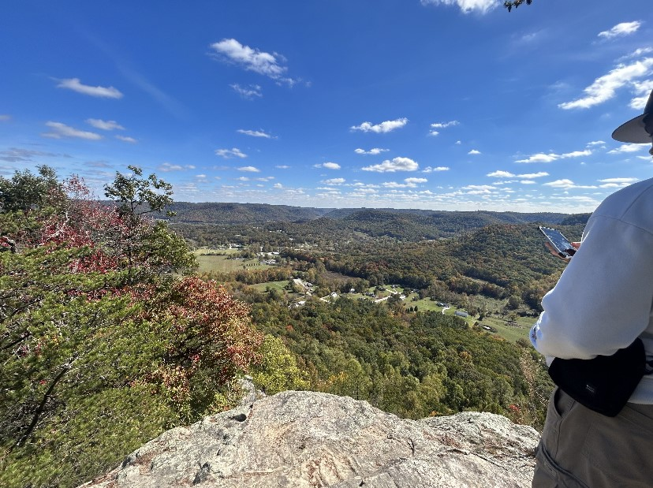

Mountain Day at Berea College is a cherished annual tradition at this liberal arts institution located in Berea, Kentucky. This special day typically occurs during the fall semester and is a time when the entire campus community, including students, faculty, and staff, comes together to celebrate the natural beauty of the surrounding Appalachian region.